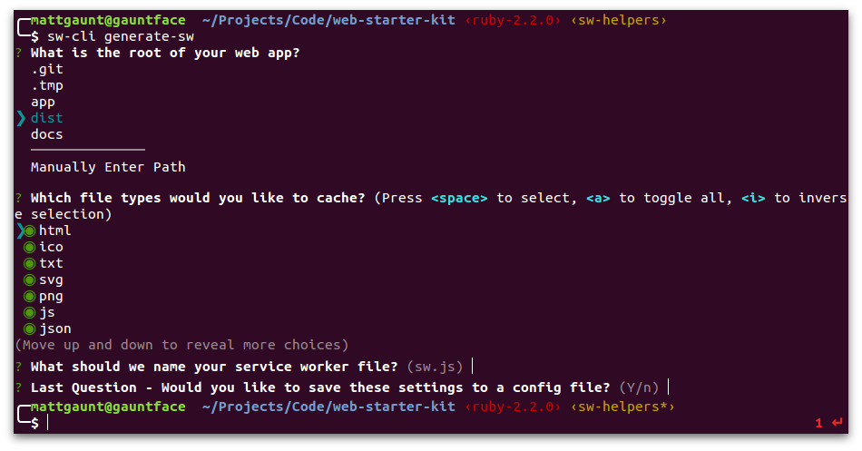

sw-cli
Get a precaching service worker in about two minutes with the sw-cli module.
Simply install the module then run it from a command line.
Install
- Install Node.js.
- Install the module with NPM.
npm install -g sw-cli
Generating a Service Worker
To generate a service worker, run sw-cli with the ‘generate:sw’ command in the root of
your project.
sw-cli generate:sw
This will ask a range of questions about your web app, such as which directory contains the assets for your site, and which assets you’d like to cache.

After the command has run you’ll have two new files, a
sw-lib.vX.X.X.min.js and sw.js file (unless you changed
the file name).
Creating a Config File
One of the questions asked by sw-cli generate:sw is whether you’d like to save
your responses to a configuration file. Answering Y will save your responses
to sw-cli-config.json. Subsequent runs of the cli will regenerate the service
worker based on the config file, which makes building faster.
Using the Generated Service Worker
To use the service worker, you’ll need to register your newly generated service worker file in your web page, which you can do like so:
if(navigator.serviceworker) {
navigator.serviceworker.register('/sw.js')
.catch(function(err) {
console.error('Unable to register service worker.', err);
});
}
With this, the browser will register your sw.js which
will preache the assets in your app and serve them
from the cache.
What is in sw.js?
For those who are curious, let’s look at what’s in the generated service worker.
importScripts('sw-lib.v0.0.13.min.js');
/**
* DO NOT EDIT THE FILE MANIFEST ENTRY
*
* .....
*/
const fileManifest = [
{
"url": "/index.html",
"revision": "b3e78d93b20c49d0c927050682c99df3"
},
{
"url": "/images/hamburger.svg",
"revision": "d2cb0dda3e8313b990e8dcf5e25d2d0f"
},
....
];
self.goog.swlib.precache(fileManifest);
The service worker imports the sw-lib file which is
a library that manages the precaching and returning
of assets when the browser requests them.
The fileManifest is an array of all the assets in your
web app. Each file entry consists of a URL and a revision.
This is used to download the files whenever they change.
The service worker then calls
goog.swlib.precache() which will download
all the assets during the service worker install event.
What Next?
If you only need precaching and serving of assets then
you can carry on using sw-cli as is.
Otherwise maybe you’ll want to explore one of the following.
Generating SW in a Build Process
If you have a build process, you might want to use the
sw-build module instead of sw-cli.
The sw-build module allows you to generate the service worker
programmatically.
Learn More About sw-build Here
Precaching in Your Own Service Worker
Instead of generating a service worker, you may want some
of the features provided by sw-cli but added to your
own service worker.
For this you have a few options.
Both sw-cli and sw-build can be used to produce a
list of assets in your web app with revision
information which can be used for precaching. We have
recipes on how to do this.
You can then use sw-lib to perform the precaching and
you can define custom routes and add anything else you
desire to your service worker.